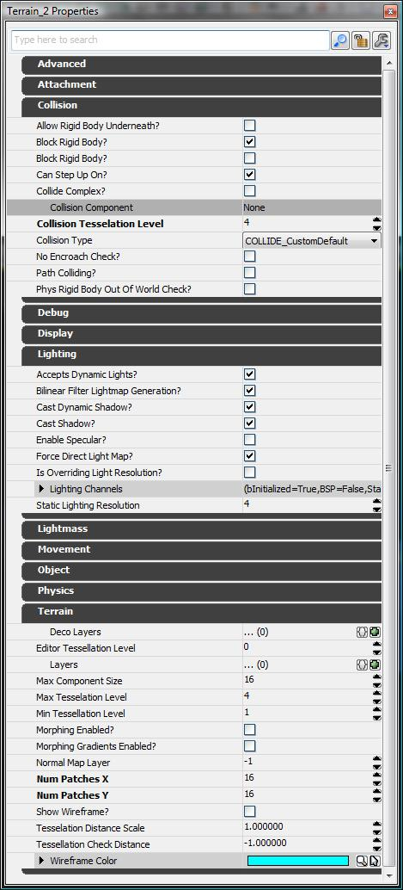

UDN
Search public documentation:
UsingTerrainKR
English Translation
日本語訳
中国翻译
Interested in the Unreal Engine?
Visit the Unreal Technology site.
Looking for jobs and company info?
Check out the Epic games site.
Questions about support via UDN?
Contact the UDN Staff
日本語訳
中国翻译
Interested in the Unreal Engine?
Visit the Unreal Technology site.
Looking for jobs and company info?
Check out the Epic games site.
Questions about support via UDN?
Contact the UDN Staff
터레인 사용하기
개요
Terrain 등록 정보

지형
NumPatchesX 및 NumPatchesY
지형의 단일 행에 포함되는 패치 수는 NumPatchesX가 결정합니다. 단일 열의 패치 수는 NumPatchesY입니다. 이 크기를 줄이면 패치에서 더 이상 사용하지 않는 높이 맵/알파 맵 및 기타 데이터가 파괴됩니다. 크기를 늘이면 새 높이 맵/알파 맵 및 기타 데이터가 0으로 채워집니다. 지형의 전체 크기는 다음 공식으로 계산할 수 있습니다. SizeX = NumPatchesX * DrawScale * DrawScale3D.X SizeY = NumPatchesY * DrawScale * DrawScale3D.YMaxTesselationLevel
디테일을 테셀레이션할 때 단일 쿼드로 축소되는 최대 패치 수(행과 열)입니다. 2의 제곱이고 1 <= MaxTesselationLevel <= 16이어야 합니다. 즉 NumPatchesX 및 NumPatchesY에 사용되는 값은 MaxTesselationLevel의 배수여야 합니다. 예를 들어 다음 그림에서는 가능한 3개의 테셀레이션 레벨 각각에서 NumPatchesX가 4, NumPatchesY가 4 및 MaxTesselationLevel가 4인 지형을 보여 줍니다. 가장 왼쪽에 있는 것이 전체 디테일로, 4x4 그리드 패치가 있습니다. 가운데 있는 것이 중간이며 축소된 패치의 2x2 그리드를 표시합니다. 가장 오른쪽에 있는 것이 가장 낮은 레벨이며 원래 영역을 포괄하는 단일 쿼드를 나타냅니다.
MinTessellationLevel
디테일을 테셀레이션할 때 축소할 '하위 쿼드'(행 및 열)의 최소 수입니다. 이 값이 MaxTesselationLevel과 같으면 지형이 디테일을 테셀레이션하지 않습니다.MaxComponentSize
엔진의 경우 지형이 렌더링을 위해 지형 구성 요소라고 하는 패치의 직사각 그룹으로 분할됩니다. MaxComponentSize는 지형 구성 요소의 단일 행/열에 완벽하게 테셀레이션 해제된 쿼드의 최대 수입니다. 지형 구성 요소의 단일 행/열 내 전체 테셀레이션 디테일에서의 최대 물리적 패치 수는 단순이 이 값과 MaxTesselationLevel을 곱한 값입니다. 일반적으로 모든 구성 요소가 MaxTesselationLevel 쿼드 정사각형이 되지만 MaxComponentSize 쿼드의 배수가 아닌 패치 해상도가 있는 지형에서는 더 작은 가장자리를 따라 몇 가지 구성 요소가 있습니다. 완벽하게 테셀레이션된 구성 요소에 대한 정점 버퍼가 65536개가 넘는 정점이 되지 않도록 하기 위해 MaxTesselationLevel로 이를 제한합니다. MaxTesselationLevel이 16이면 MaxComponentSize는 <= 14로 제한됩니다.MaxTesselationLevel이 8이면 MaxComponentSize는 <= 30으로 제한됩니다.
각 지형 구성 요소에는 개별적인 DrawMesh 호출이 있습니다. 지형 패치에 적용된 레이어 및 렌더링된 테셀레이션 레벨의 결과인 적용된 재질의 복잡성에 따라 구성 요소의 성능 소모가 달라집니다. 특정 레이어가 단일 지형 구성 요소에 적용된 경우 다른 구성 요소가 이에 따른 피해를 입지 않습니다. 레이어가 실제로는 인접하는 구성 요소로 '나타날' 경우 다소 어렵게 보일 수도 있습니다. 지형 브라우저나 등록 정보 창을 통해 공개되는 강조 표시 오버레이는 이러한 경우를 파악하는 데 유용할 수 있습니다. MaxComponentSize 보기: 지형에서 구성 요소 크기를 보려면 뷰포트의 Show Flags 메뉴에서 "Terrain Patches" 플래그를 선택합니다. 활성화할 경우 지형이 지형 내 각 구성 요소 주변에 노란 상자를 렌더링합니다. MaxComponentSize는 지형에 대해 단일 UTerrainComponent 인스턴스에 포함될 쿼드 수를 나타냅니다. 이 값이 클수록 지형의 '하위 조각'이 적어집니다. 구성 요소 수는 다음과 같이 결정됩니다. NumSectionsX = ((NumPatchesX / MaxTesselationLevel) + MaxComponentSize - 1) / MaxComponentSize NumSectionsY = ((NumPatchesY / MaxTesselationLevel) + MaxComponentSize - 1) / MaxComponentSize